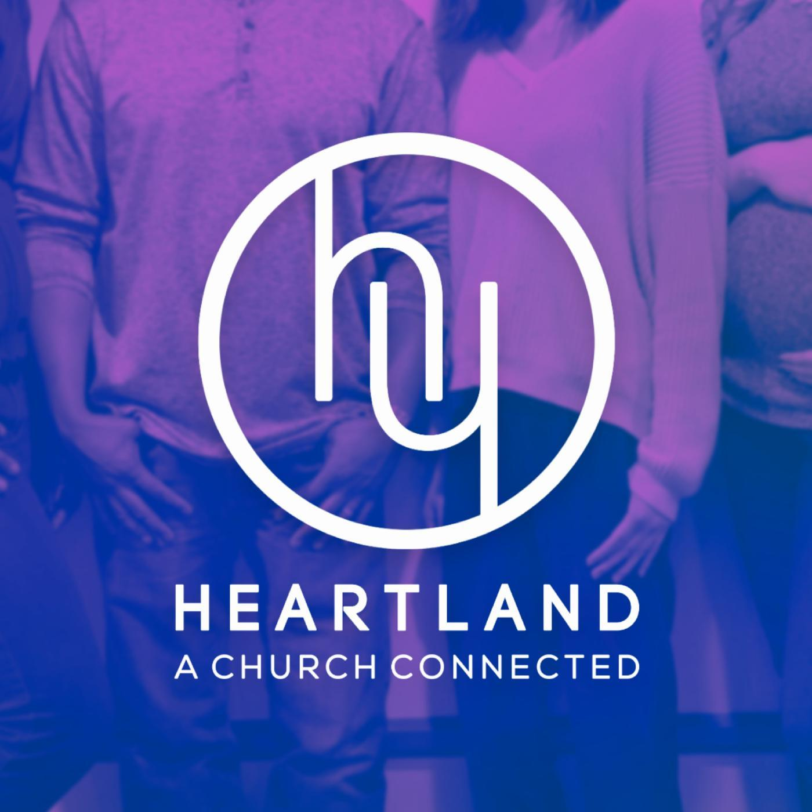
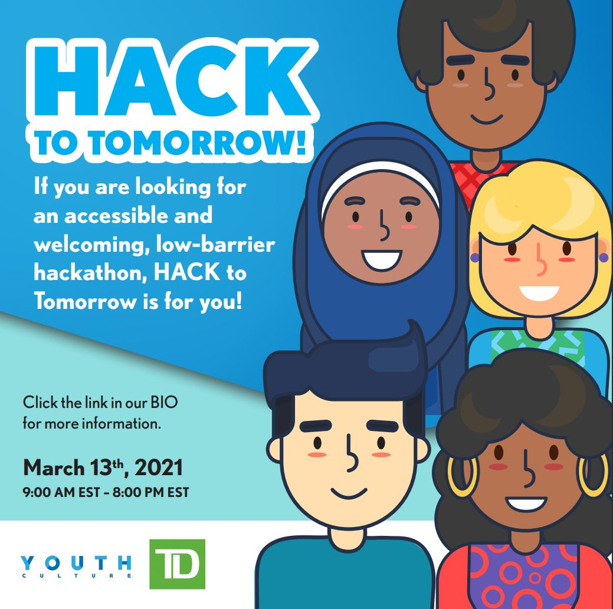

Video Editing:
- Used Final Cut Pro X to edit together multiple pieces of media and created videos that would be specially designed for social media engagement (Instagram, Facebook, YouTube).
- Worked with captioning, editing audio and colour correcting lengthy videos down into engaging and enticing videos for social media in a fast and timely manner.
Event Planning:
- Planned and created events for youth grades 6-12 that were entertaining and engaging while complying with COVID-19 guidelines surrounding the launch of our Fall Semester.
- Helped ideate innovative activities that could be utilized during weekly youth programs using MS Office Suite.
Organization:
- Collaborated in reformatting titles and images for the church's weekly podcast.
- Used building blueprints to reorganize numerous games and activities according to their appropriate locations.

Entrepreneurial Ventures
Content Creator on YouTube
August 2019 - Present
Matt is a content creator on YouTube and a student studying computer science. He creates video reviews on the latest technology, comparisons between devices, and showcases new upcoming products. These gadgets range from laptops to earbuds, serving an audience of tech enthusiasts on YouTube. He has amassed over 500K channel views and over 2K subscribers in one year.
Founder at BysonVideo
May 2019 - Sept 2021
BysonVideo is a media company focused on video creation services. Amidst COVID-19, parents and guardians have lost the ability to celebrate their child's academic success. BysonVideo solves this problem through personal videos that are created and edited in-house.
3rd Place at HACK to Tomorrow Hackathon by TD x Youth Culture
Studyroom is a tool that uses student preferences to create a personalized virtual study space. Our theme was to design a solution that helps improve educational experiences for youth ages 13-19 in communities in need. This idea could include ideas under financial literacy, general learning, accessibility, future planning and more. Throughout the day, we worked together to identify the problem, create a solution, and market our app to a panel of judges.

Education
BBA & BSc, Wilfrid Laurier University
Sept 2021 - June 2026
- Bachelor of Science in Computer Science & Bachelor of Business Administration double degree student.
- Awarded Entrance Scholarship of $3000 for Academic Excellence.